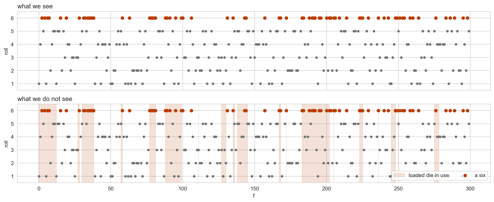
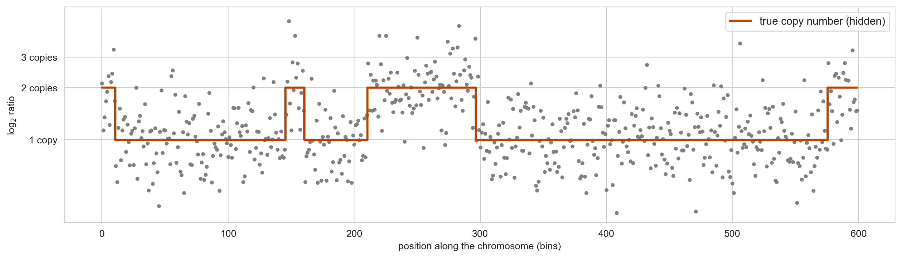
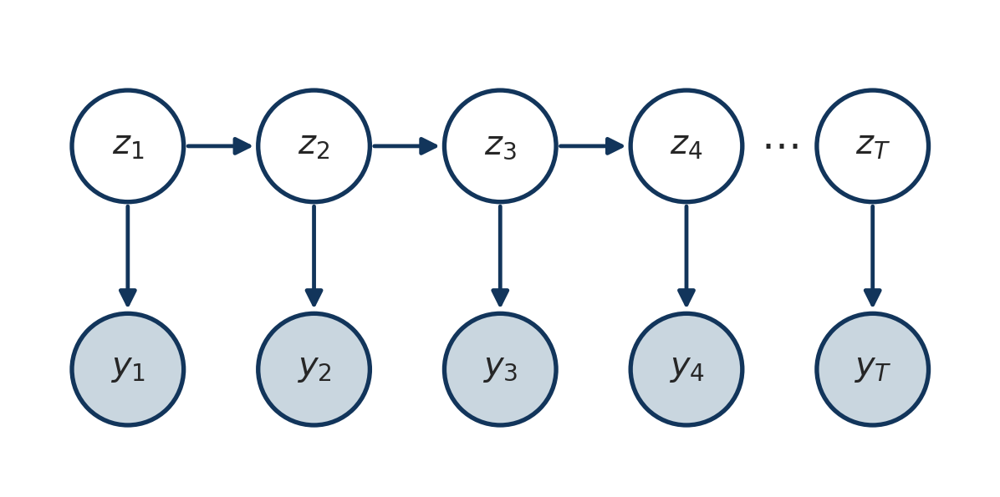
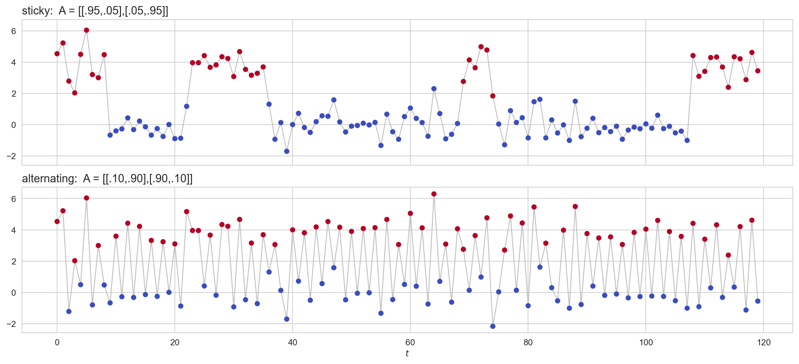
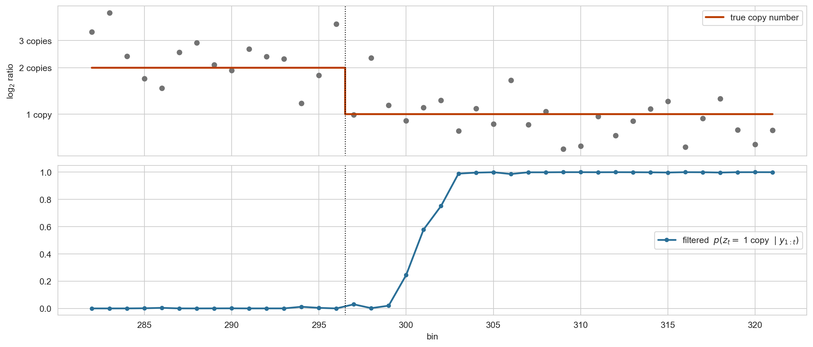
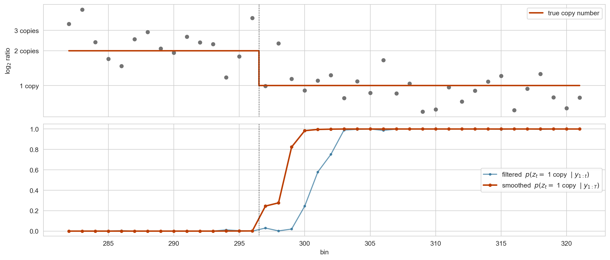

Hidden Markov models and the forward-backward algorithm
Seong-Hwan Jun
Department of Biostatistics and Computational Biology, University of Rochester Medical Center
Where we are
Where we left off
Week 3 ended with three things to carry forward:
A latent variable model is a generative story with some variables hidden.
EM estimates \(\theta\) by averaging the complete data log likelihood over the posterior of the hidden variables, then maximizing. The E-step is the posterior; the M-step is a weighted complete data MLE.
The E-step was cheap because of the mixture’s structure: given \(\theta\), the labels were independent, so the posterior over \(z_{1:N}\) was \(N\) separate distributions over \(K\) values, the responsibilities \(r_{ik}\).
This week we drop the independence. The labels form a Markov chain, the posterior over \(z_{1:T}\) no longer factorizes, and computing it becomes an algorithm in its own right.
Today: the model and the algorithm. Wednesday: learning the parameters.
Goals
Write down the hidden Markov model as a generative model, draw its graphical model, and read off its conditional independences.
Recognize the situations that call for one, and see how one change to the mixture model produces it.
Explain why the likelihood is a sum over \(K^T\) paths and why that sum can nevertheless be computed in \(O(TK^2)\).
Derive the forward and backward recursions, and use them for filtering, smoothing and likelihood evaluation.
Last week we fit a two component mixture to these durations. To do that we treated the 272 eruptions as exchangeable: we could have shuffled them without changing the model.
p_long = (kind =="long").mean()print(f"P(long) = {p_long:.3f}")print(f"P(long | previous short) = {counts.loc['short','long'] / counts.loc['short'].sum():.3f}")print(f"short followed by short : {counts.loc['short','short']} times out of {len(kind)-1}")
P(long) = 0.632
P(long | previous short) = 0.930
short followed by short : 7 times out of 271
A short eruption is followed by a long one 93% of the time, against a marginal rate of 63%. Two short eruptions in a row happened seven times in the whole record.
How much information is in the ordering?
Code
k = (kind =="long").astype(int)ll_iid = np.sum(k * np.log(p_long) + (1- k) * np.log(1- p_long))A_hat = counts.to_numpy() / counts.to_numpy().sum(axis=1, keepdims=True)idx = {"long": 0, "short": 1}ll_markov = np.log(p_long if k[0] else1- p_long) +sum( np.log(A_hat[idx[a], idx[b]]) for a, b inzip(kind[:-1], kind[1:]))print(f"independent model : {ll_iid:8.1f} (1 parameter)")print(f"Markov model : {ll_markov:8.1f} (3 parameters)")print(f"likelihood ratio statistic = {2*(ll_markov-ll_iid):.1f} on 2 df")
independent model : -178.9 (1 parameter)
Markov model : -143.7 (3 parameters)
likelihood ratio statistic = 70.4 on 2 df
Thirty five nats for two extra parameters, using the labels alone. The independence assumption is not a harmless simplification here: it throws away most of what the sequence has to say.
One change to the model
Mixture: \(z_i \sim \text{Categorical}(\pi)\), drawn afresh and independently for each \(i\).
Hidden Markov model: \(z_t \mid z_{t-1} \sim \text{Categorical}(A_{z_{t-1}, \, \cdot})\). The next state depends on the current one.
That is the entire difference. The emission model \(p(y_t \mid z_t)\) is unchanged, and the latent variables are still discrete and unobserved.
The index also changes meaning: \(i\) was an exchangeable observation, \(t\) is a position in a sequence.
Motivating examples
The occasionally dishonest casino
A casino uses two dice. One is fair. The other is loaded: it shows a six half the time. The dealer switches dice now and then, and we see only the rolls.
The example is from Durbin, Eddy, Krogh and Mitchison, Biological Sequence Analysis (1998), where it stands in for a genome that switches between regions with different base composition.
Three hundred rolls
Code
def plot_rolls(ax, y, z=None, t0=0, t1=None): t1 =len(y) if t1 isNoneelse t1 tt = np.arange(t0, t1)if z isnotNone: ax.fill_between(tt, 0.5, 6.5, where=z[t0:t1] ==1, color=M2, alpha=0.15, step="mid", label="loaded die in use") six = y[t0:t1] ==6 ax.scatter(tt[~six], y[t0:t1][~six], s=14, color="0.45") ax.scatter(tt[six], y[t0:t1][six], s=30, color=M2, zorder=3, label="a six") ax.set_yticks(range(1, 7)); ax.set_ylim(0.5, 6.5); ax.set_ylabel("roll")fig, axes = plt.subplots(2, 1, figsize=(13, 5.4), sharex=True)plot_rolls(axes[0], y_cas)axes[0].set_title("what we see", loc="left")plot_rolls(axes[1], y_cas, x_cas)axes[1].set_title("what we do not see", loc="left"); axes[1].set_xlabel("$t$")axes[1].legend(loc="lower right", fontsize=10, ncol=2)plt.tight_layout(); plt.show()

Even knowing where the loaded die was used, the rolls give it away only weakly: a six is evidence, but fair dice roll sixes too. The stretches are what carry the information.
What the casino asks
Given the rolls \(y_{1:T}\):
Which rolls came from the loaded die? A posterior probability for every \(t\), not a single guess.
How likely is this sequence under the two-dice story, compared with a single fair die? A likelihood.
What are the dice, and how often does the dealer switch? Parameters, learned from rolls alone.
The first two are today’s business. The third is Wednesday’s.
Segmenting a genome

Copy number changes in a tumour. The hidden state is the number of copies in each bin, it changes rarely, and each bin reports it through a noisy read-depth ratio. The “time” index is position along the genome.
Where HMMs are used
Genomics: copy number variation, CpG island detection, gene finding, chromatin state segmentation. The state is a region type; the index is genomic position.
Speech and audio: the state is a phoneme, the observation a spectral frame. HMMs ran this field for thirty years.
Natural language: part of speech tagging, where states are tags and observations are words.
Tracking and robotics: the state is a position, the observation a noisy sensor reading.
Finance and epidemiology: regime switching models, where the state is an unobserved regime.
In every case the appeal is the same: we believe there is a discrete, unobserved process evolving along a sequence, and we see only a noisy function of it.
Parameters: \(\theta = (\pi, A, \phi)\). The chain is homogeneous: \(A\) does not depend on \(t\).
For the casino, \(K = 2\), \(\phi_k\) is a distribution over six faces, and \(A\) says the dealer keeps the fair die with probability \(0.9\) and the loaded one with probability \(0.8\).
The graphical model

Shaded nodes are observed. A single chain of hidden states, each emitting one observation. Compare with the mixture model’s graph: the plate is gone, and in its place is an arrow from each \(z_t\) to the next.
the only new object is the middle product. Everything we know about emissions carries over untouched.
What the arrows mean
Bayes ball on the chain gives two independence statements:
Markov property: \(z_t \perp z_{1:t-2} \mid z_{t-1}\). The present state screens off the entire past.
Emissions are local: \(y_t \perp \text{everything else} \mid z_t\).
The observations are not marginally independent. \(y_1\) and \(y_T\) are connected through the chain of hidden states, and that dependence is the whole point.
Important
Once we condition on all of \(y_{1:T}\), the hidden states become coupled: \(y_T\) carries information about \(z_1\). So the posterior does not factorize,
which is exactly where the mixture’s E-step got its simplicity. We will have to work harder.
The chain forgets
Run the chain with no observations. The marginal \(p(z_t)\) is \(\pi A^{t-1}\), and for any chain that can get everywhere it settles to a stationary distribution\(\rho\) with \(\rho A = \rho\).
Code
def stationary(A): w, v = np.linalg.eig(A.T) rho = np.real(v[:, np.argmax(np.real(w))])return rho / rho.sum()print(f"casino : rho = {np.round(stationary(A_cas), 3)} long run fraction of loaded rolls")print(f"Old Faithful: rho = {np.round(stationary(A_hat), 3)} compare with P(long) = {p_long:.3f}")
casino : rho = [0.667 0.333] long run fraction of loaded rolls
Old Faithful: rho = [0.631 0.369] compare with P(long) = 0.632
\(\rho\) plays the role the mixing weights \(\pi\) played in the mixture: the long run frequency of each state.
It is a consequence of \(A\), not a free parameter. The initial distribution \(\pi\) only matters for the first few steps.
What \(A\) controls: the texture of the sequence
Code
def simulate_hmm(T, pi, A, mu, sd, rng): K =len(pi) z = np.zeros(T, dtype=int) z[0] = rng.choice(K, p=pi)for t inrange(1, T): z[t] = rng.choice(K, p=A[z[t-1]])return z, rng.normal(mu[z], sd[z])pi0 = np.array([0.5, 0.5])mu, sd = np.array([0.0, 4.0]), np.array([0.8, 0.8])settings = {"sticky: A = [[.95,.05],[.05,.95]]": np.array([[0.95, 0.05], [0.05, 0.95]]),"alternating: A = [[.10,.90],[.90,.10]]": np.array([[0.10, 0.90], [0.90, 0.10]]),}fig, axes = plt.subplots(2, 1, figsize=(13, 6), sharex=True, sharey=True)for ax, (name, A) inzip(axes, settings.items()): z, y = simulate_hmm(120, pi0, A, mu, sd, np.random.default_rng(1)) ax.plot(y, color="0.75", lw=1, zorder=1) ax.scatter(np.arange(len(y)), y, c=z, cmap="coolwarm", s=26, zorder=2) ax.set_title(name, fontsize=13, loc="left")axes[1].set_xlabel("$t$")plt.tight_layout(); plt.show()

Same emissions, same stationary distribution \((0.5, 0.5)\). Only \(A\) differs.
The model is a template
The chain is always the same; swap the emission and you get a different model.
hidden states
emission
model
discrete
categorical
discrete HMM (the casino, text, genomics)
discrete
Gaussian
Gaussian HMM (Old Faithful, copy number)
continuous
linear Gaussian
linear dynamical system, the Kalman filter
continuous
arbitrary
general state space model (later in the course)
\[
\text{AR(1)}: \quad z_t = \phi z_{t-1} + \epsilon_t, \qquad y_t = z_t + \eta_t
\] is the linear Gaussian case with a scalar state. Everything today is for the discrete case, where sums are finite.
A mixture is a special case
Suppose every row of \(A\) is identical, \(A_{jk} = \pi_k\) for all \(j\). Then
\[
p(z_t \mid z_{t-1}) = p(z_t),
\]
the chain forgets immediately, and the joint collapses to \(\prod_t p(z_t) p(y_t \mid z_t)\): a mixture model.
So mixture \(\subset\) HMM, and the interesting parameters are the ones that make the rows of \(A\) differ. For Old Faithful the two rows are nothing alike: after a short eruption the next is almost surely long, after a long one it is a coin flip. The mixture assumed both rows were the same.
What we want to compute
Three questions
Given \(\theta\) and observations \(y_{1:T}\):
Evaluation. What is \(p(y_{1:T} \mid \theta)\)? Needed to compare models, and it is the objective if we want to learn \(\theta\).
Decoding. What were the hidden states?
\(p(z_t \mid y_{1:t})\): filtering, using the past only, for online use.
\(p(z_t \mid y_{1:T})\): smoothing, using everything.
Learning. What is \(\hat{\theta}\)? The states are latent, so this is a job for EM.
Questions 2 and 3 are the E-step and M-step of Week 3, in a model where the E-step is no longer a one line calculation. Today: questions 1 and 2.
Why we cannot just sum
The likelihood requires marginalizing every hidden state:
rows = [{"K": K, "T": T, "number of paths": f"{K**T:.3g}"}for K, T in [(2, 10), (2, 50), (2, 272), (2, 300), (3, 600)]]md_table(pd.DataFrame(rows))
K
T
number of paths
2
10
1.02e+03
2
50
1.13e+15
2
272
7.59e+81
2
300
2.04e+90
3
600
1.87e+286
The Old Faithful sequence with two states already has \(2^{272} \approx 8 \times 10^{81}\) paths, more than the number of atoms in the observable universe. Enumeration is not slow; it is impossible.
The way out
The sum is enormous, but the summand factorizes, and sums distribute over products:
\(T\) steps, each a \(K \times K\) matrix-vector product: \(O(TK^2)\).
Question 1, the likelihood, is already answered, and we have not touched a single path.
In matrix form, with \(\alpha_t\) and \(B_t\) as row vectors of length \(K\): \(\alpha_t = (\alpha_{t-1} A) \odot B_t\), where \(\odot\) is the elementwise product, \((u \odot v)_k = u_k v_k\).
Numerical stability
\(\alpha_t(k)\) is a joint probability of \(t\) observations. It decays geometrically and underflows within a few hundred steps.
The standard fix is to normalize as we go. Define \(c_t := p(y_t \mid y_{1:t-1})\) and
\(\hat{\alpha}_t\) is the filtering distribution: an interpretable quantity that sums to one, rather than a vanishing number.
The recursion becomes predict, then update: \(\hat{\alpha}_t \propto (\hat{\alpha}_{t-1} A) \odot B_t\), and the normalizer at step \(t\) is exactly \(c_t\).
The normalizers give the likelihood for free: \(\;\log p(y_{1:T}) = \sum_{t=1}^{T} \log c_t\).
The alternative is to run everything in log space with logsumexp, as we did for the mixture model.
Three rolls by hand
The casino’s first three rolls are \(1, 4, 6\). Predict with \(A\), update with the roll, normalize:
t
roll
predicted (fair, loaded)
B_t(fair), B_t(loaded)
alpha-hat (fair, loaded)
1
1
(0.500, 0.500)
(0.167, 0.100)
(0.625, 0.375)
2
4
(0.637, 0.363)
(0.167, 0.100)
(0.746, 0.254)
3
6
(0.722, 0.278)
(0.167, 0.500)
(0.464, 0.536)
Roll 1 is a one, which the loaded die produces less often, so the filter leans towards fair. Roll 2, a four, leans the same way.
Roll 3 is a six. One six, against a prior of about \(72\%\) fair after the prediction step, is enough to tip the posterior past one half.
Each row used only the row before it. The first two rolls survive only through \(\hat{\alpha}_2\).
Implementation: forward
def forward(logB, pi, A):"""logB[t, k] = log p(y_t | z_t = k). Returns filtered posteriors alpha-hat and normalizers c.""" T, K = logB.shape B = np.exp(logB) alpha, c = np.zeros((T, K)), np.zeros(T) a = pi * B[0] c[0] = a.sum(); alpha[0] = a / c[0]for t inrange(1, T): a = (alpha[t-1] @ A) * B[t] # predict, then update c[t] = a.sum(); alpha[t] = a / c[t] # normalize, remembering the normalizerreturn alpha, c
The algorithm never sees \(y\), only logB. Change the emission family and nothing here changes. That is the template property of the last section, in code.
The filter reacts to sixes and decays back towards fair between them. It is always a little late: at a switch it has to wait for evidence.
The backward algorithm
Why the past is not enough
Back to the chromosome. Around a copy number change, the filter has a structural problem: it can only use the bins it has already seen.

The copy number changes at bin 297. The filter does not believe it until bin 301: one noisy bin is not evidence, so it waits for several.
Ten bins later it is certain, and those ten bins say something about bin 297 too: they came from the new state, and the chain is sticky, so bin 297 almost certainly did as well. The filter cannot use that. When it processed bin 297, the later bins had not happened yet.
Nobody segments a genome online. We have the whole chromosome, and the breakpoint location is the answer. The object we want is \(p(z_t \mid y_{1:T})\), and it is also what the E-step will need.
So we need a second quantity that summarizes the future the way \(\alpha_t\) summarizes the past.
Same cost, run right to left. Note \(\beta\) is a conditional likelihood, not a distribution over states: it need not sum to one, and it needs the same rescaling as \(\alpha\).
Putting the two passes together
Because \(y_{1:t}\) and \(y_{t+1:T}\) are conditionally independent given \(z_t\):
Check: summing \(\xi_t(j, k)\) over \(j\) should give \(\gamma_t(k)\). Verify it from the recursion for \(\alpha_t\).
Implementation: backward and both passes
def backward(logB, A, c):"""Backward variables, rescaled by the forward normalizers so that alpha * beta = gamma.""" T, K = logB.shape B = np.exp(logB) beta = np.zeros((T, K)); beta[-1] =1.0for t inrange(T-2, -1, -1): beta[t] = (A @ (B[t+1] * beta[t+1])) / c[t+1]return betadef forward_backward(logB, pi, A):"""Returns gamma[t, k], xi[t, j, k] (for t >= 1), the log likelihood, and the filtered posteriors.""" alpha, c = forward(logB, pi, A) beta = backward(logB, A, c) B = np.exp(logB) gamma = alpha * beta xi = alpha[:-1, :, None] * A[None] * (B[1:] * beta[1:])[:, None, :] / c[1:, None, None]return gamma, xi, np.log(c).sum(), alpha
With the rescaled \(\hat\alpha\) and \(\hat\beta\), the product \(\hat\alpha_t(k) \hat\beta_t(k)\) is already \(\gamma_t(k)\); the division by \(p(y_{1:T})\) has been absorbed into the normalizers. The same bookkeeping produces \(\xi\).
Does it actually work?
For a short sequence we can still enumerate every path and compare.
Code
rng = np.random.default_rng(0)K_, T_ =2, 8pi_t = np.array([0.6, 0.4]); A_t = np.array([[0.7, 0.3], [0.2, 0.8]])mu_t, sd_t = np.array([0.0, 3.0]), np.array([1.0, 1.0])z_t, y_t = simulate_hmm(T_, pi_t, A_t, mu_t, sd_t, rng)logB = np.column_stack([norm.logpdf(y_t, mu_t[k], sd_t[k]) for k inrange(K_)])gamma, xi, ll, alpha = forward_backward(logB, pi_t, A_t)total =0.0for path in itertools.product(range(K_), repeat=T_): lp = np.log(pi_t[path[0]]) + logB[0, path[0]]for t inrange(1, T_): lp += np.log(A_t[path[t-1], path[t]]) + logB[t, path[t]] total += np.exp(lp)print(f"forward-backward : {ll:.10f}")print(f"brute force ({K_**T_} paths) : {np.log(total):.10f}")print(f"gamma rows sum to one : {np.allclose(gamma.sum(1), 1)}")print(f"xi marginalizes to gamma : {np.allclose(xi.sum(1), gamma[1:])}")
forward-backward : -14.2808986703
brute force (256 paths) : -14.2808986703
gamma rows sum to one : True
xi marginalizes to gamma : True
The same check will guard Wednesday’s implementation. Any algorithm that claims to compute a sum should be tested against the sum, on an instance small enough to do it.
Smoothing the genome

breakpoint at bin 297: filter settles 4 bins late, smoother 2 bin(s) off
whole chromosome, 600 bins: filtering accuracy 97.3%, smoothing accuracy 99.5%
The same breakpoint as before. The bins after the change have now told the bins at the change what they were. The smoother is still off by a bin or two, and honestly so: look at the data at bins 297 and 298, where one point sits at two copies, and the smoothed posterior there is a genuine maybe rather than a confident no. Over the whole chromosome the gain in accuracy is a few percent; at the breakpoints, which is where the answer lives, it is most of the answer.
Smoothing is sharper and its switches are better placed: it has already seen the sixes that the filter is still waiting for. Neither is perfect. A loaded die that happens to roll no sixes for a while is indistinguishable from a fair one.
What forward-backward hands to EM
Note
Compare with the mixture model. There the E-step produced one number per observation, the responsibility \(r_{ik} = p(z_i = k \mid y_i, \theta)\), because the posterior factorized. Here it produces two objects:
\(\gamma_t(k) = p(z_t = k \mid y_{1:T}, \theta)\): a responsibility, conditioned on the whole sequence;
\(\xi_t(j, k) = p(z_{t-1} = j, z_t = k \mid y_{1:T}, \theta)\): a responsibility for each transition.
The second one is new, and it is exactly the price of the dependence we introduced. Wednesday: why these two are all the M-step needs.
Summary
What we have
question
algorithm
cost
\(p(y_{1:T} \mid \theta)\)
forward
\(O(TK^2)\)
\(p(z_t \mid y_{1:t})\)
forward
\(O(TK^2)\)
\(p(z_t \mid y_{1:T})\) and \(p(z_{t-1}, z_t \mid y_{1:T})\)
forward-backward
\(O(TK^2)\)
\(\hat{\theta}\)
Baum-Welch (Wednesday)
\(O(TK^2)\) per iteration
All exact. All linear in \(T\), against \(K^T\) for enumeration. One recursion, run in two directions.
Next
Wednesday. The casino’s third question: learn \(\pi\), \(A\) and the dice from rolls alone. EM with forward-backward as the E-step is Baum-Welch. The M-step will turn out to be counting, with \(\gamma\) and \(\xi\) standing in for the counts.
Next week. A chain is the easy case. When the latent variables form a tree, the same two passes become collect and distribute, and the algorithm is called belief propagation.
After that. Factor graphs give a single language for all of it, with forward-backward and belief propagation as special cases of one message passing rule.
The forward recursion costs \(O(TK^2)\) because of the sum over \(j\) at each \(t\) and each \(k\). What happens to that sum if the state is continuous, and what assumption would make it tractable again?
Reading
For today. Bishop, Pattern Recognition and Machine Learning (2006), §13.1 Markov models and §13.2 Hidden Markov models, in particular §13.2.2 (forward-backward) and §13.2.4 (scaling).
The casino. Durbin, Eddy, Krogh and Mitchison, Biological Sequence Analysis (1998), Ch. 3. Short, concrete, and written for biologists.
For Wednesday. Bishop §13.2.1, Maximum likelihood for the HMM; MLaPP §17.5, Learning for HMMs.
As you read Bishop §13.2.1, notice that the M-step is written entirely in terms of \(\gamma\) and \(\xi\). Nothing else about the posterior is ever needed. Wednesday starts from why.